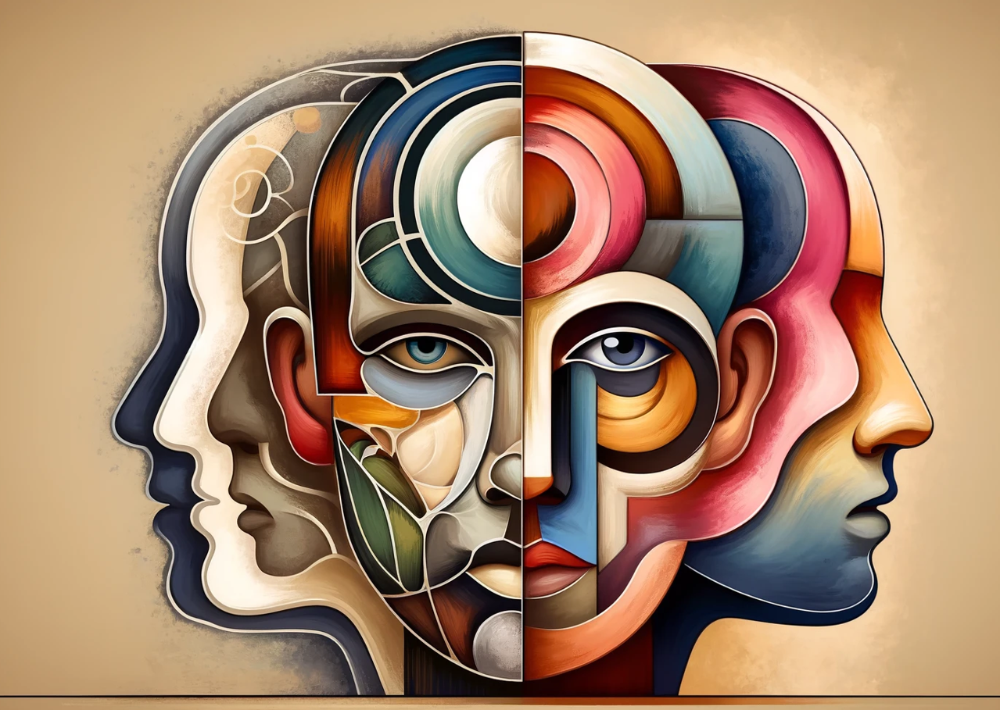

1. 초등5학년 학교 생활의 특징
1) 과목별 난이도 증가에 따른 학업 과제
초등 5학년은 사회, 과학, 수학 등의 교과에서 추상적 개념과 사고력이 요구되는 단원이 많아지며, 자기 주도적 학습 전략의 필요성이 본격화된다. 이에 따라 반복 학습보다는 개념 이해 중심의 접근이 강조되며, 독해력과 사고력을 바탕으로 하는 과목 간 통합적 이해가 학업 적응의 핵심 요소로 작용한다.
2) 교과·수행 중심 평가에 대한 부담
초등5학년은 단원평가, 실험 보고서, 프로젝트 수행 등 다양한 평가 방식이 도입되면서 단순 암기보다는 과정을 중시하는 학습 태도가 요구된다. 이 과정에서 성취의 불균형이 발생할 경우 열등감이나 회피 행동이 나타날 수 있으며, 평가 결과를 자기 존재감으로 동일시하는 경향도 생겨날 수 있다.
3) 교사와의 관계 요인
교사의 지지나 인정은 아동의 자존감 형성과 학교에 대한 소속감을 강화시키며, 교사가 기대를 보이는 학생일수록 더 긍정적인 학업 태도와 자기효능감을 갖는 경향이 있다. 특히 성취도가 낮은 학생에게 교사의 격려는 학습 동기의 회복에 결정적인 영향을 미친다.
4) 또래 집단의 영향
초등5학년은 또래 사이에서 자신의 역할이나 존재감을 확인받는 경험은 정서적 안정과 학업 지속력에도 긍정적으로 작용한다. 반면 집단에서 소외되거나 따돌림을 당하는 경우, 학업 흥미 저하뿐만 아니라 수업 집중력 저하, 등교 거부 등의 부적응 행동으로 연결될 수 있다.

2. 초등5학년 사회성 발달의 특징
1) 대상관계의 중심
또래 집단은 이 시기 아동의 정체성과 행동 기준을 형성하는 핵심 장이 된다. 친구의 수용 여부에 따라 정서 안정이나 행동 방향이 크게 영향을 받으며, 배제나 따돌림 상황은 강한 스트레스를 유발할 수 있다. 또한, 단짝 친구의 유무, 비밀 공유, 팀워크 경험 등이 사회적 소속감을 강화시키는 대상관계의 요인이 된다.
2) 협동과 경쟁
집단 활동 속에서 협동의 중요성을 배우면서도, 개인 평가나 인기 경쟁 속에서 비교와 질투를 경험하게 된다. 이 과정은 갈등 해결력, 타협 능력, 공정성 인식 등 사회적 판단 능력을 발달시키는 데 기여한다. 단, 경쟁 중심 환경에서 열등감을 지속적으로 경험할 경우 공격적 행동이나 회피 행동이 강화될 수 있다.
3) 도덕성의 내면화 시작
규칙이나 도덕 기준을 단순히 ‘어른의 말’이 아닌 ‘자신이 옳다고 믿는 기준’으로 받아들이기 시작하며, 정의감이나 양심에 기반한 판단을 하려는 시도가 나타난다. 예컨대 "그건 친구에게 나쁜 행동이야"와 같은 말은 도덕적 추론의 결과이며, 이 시기의 도덕교육은 규범의 이유와 맥락을 함께 설명하는 방식이 효과적이다.
4) 사회적 역할 이해
가정, 학교, 또래 관계 속에서 자신이 맡은 역할(형·동생, 친구, 반장 등)에 대한 자각이 생기며, 역할 수행을 통해 책임감이나 소속감이 강화된다. 예를 들어 반 친구를 도와주거나 발표를 주도하며 자긍심을 느끼는 경험은 사회적 역량의 핵심 기반이 된다. 이러한 역할 경험은 장기적으로 시민성이나 공동체 의식 형성에도 영향을 준다.
3. 초등5학년 또래관계의 특징
1) 밀착 관계 형성
신뢰 기반의 1:1 관계는 정서적 안정감뿐만 아니라 사회적 정체성의 기반이 되며, 친밀한 친구와의 교류를 통해 감정 표현과 공감 능력을 심화시킨다. 이러한 관계가 흔들릴 경우 큰 심리적 상처를 경험할 수 있어, 관계 변화에 대한 정서 조절을 배우는 중요한 시기이기도 하다.
2) 사회적 비교 강화
인기 있는 친구의 행동, 말투, 소지품을 모방하며 ‘또래 기준’에 맞추려는 경향이 강해지고, 자신의 사회적 위치를 민감하게 인식한다. 일부 학생은 주도적인 친구에게 의존하거나, 눈에 띄기 위한 과장된 행동을 하기도 하며, 이 과정에서 갈등이 촉발될 가능성도 높다.
3) 사회적 판단 증가
집단 내 암묵적 규칙을 어긴 친구를 비난하거나 무시하는 경향이 생기며, 일탈 행동이나 규칙 위반에 대해 비교적 명확한 태도를 갖게 된다. 이는 정의감과 책임감의 발달을 반영하는 동시에, 자기중심적 판단에서 벗어나 사회적 판단 능력이 성장하고 있음을 보여준다.
4) 사회적 기술 습득
다툼이나 오해, 질투 등 관계 내 마찰을 경험하면서 감정 표현, 사과, 중재 요청 등의 대인 기술이 자연스럽게 형성된다. 실패한 관계 경험도 장기적으로는 타인과의 경계 설정, 적절한 친밀감 형성 등 건강한 사회성 발달의 자원이 될 수 있다.
4. 교사와의 관계 및 교사의 역할
1) 교사의 역할 모델
학생은 교사의 언행, 정서적 반응, 갈등 해결 방식 등을 무의식적으로 모방하며, 교사의 기대와 태도가 자기개념 형성에 영향을 준다. 특히 부당하거나 차별적 대우를 받은 경험은 정서적 거리감과 부정적 학교 이미지로 이어질 수 있으므로, 교사는 일관되고 공정한 태도를 유지해야 한다.
2) 정서적 안정감
학생의 실수나 어려움에 공감하며 격려하는 교사의 태도는 심리적 안정뿐 아니라 자기 표현력 향상, 학업 참여 의욕 증가로 이어진다. 또한 교사에게 ‘인정받는다’는 느낌은 학생의 정서적 안정성과 타인에 대한 신뢰 형성에 긍정적으로 작용한다.
3) 학습 동기 촉진자
학생의 학습 양상과 이해 수준을 세심하게 파악하고 적절한 피드백을 제공할 수 있을 때, 학생은 자기주도성과 성취감을 경험한다. 특히 도전 과제를 단계별로 안내하고 성공 경험을 제공하면, 학습 회피보다는 시도 중심의 태도를 기를 수 있다.
4) 또래 갈등 중재자
또래 간 갈등 상황에서 교사는 단순한 판결자가 아니라 감정 해석과 상황 이해를 도와주는 조력자의 역할을 수행해야 한다. 갈등 이후에는 감정을 되돌아보고 의사소통을 개선하는 피드백을 주는 것이 효과적이며, 교실 속 사회성 교육의 일부로 다뤄야 한다.
5. 부모와의 관계 및 부모의 역할
1) 심리적 의존과 공존
자기 주장과 선택을 시도하면서도 부모의 인정, 지지, 피드백에 강하게 의존하는 양가적 정서가 공존한다. 부모가 과잉 통제하거나 무관심할 경우, 반항 또는 위축이 나타날 수 있으며, 건강한 독립을 위해 적절한 거리 유지와 협력적 대화가 중요하다.
2) 학습 습관 지도자
지속적이고 긍정적인 학습 습관은 가정에서 형성되는 경우가 많으며, 부모의 태도와 관심이 장기적 학습 동기에 큰 영향을 미친다. 학업 성과보다는 노력과 과정 중심의 칭찬을 통해 자기 주도 학습력을 키워주는 것이 효과적이다.
3) 정서적 모델 역할
부모가 감정을 솔직하고 조절된 방식으로 표현할수록 아동은 감정 표현의 범위와 방식을 배우게 된다. 부모의 분노 폭발이나 회피적 태도는 자녀의 감정 억제나 과잉 반응으로 이어질 수 있어, 정서적 소통 방식에 대한 부모 교육도 필요하다.
4) 가정과 학교생활 조력자
아동이 또래나 학교에서 겪는 감정적 문제를 스스로 해결할 수 있도록 격려하면서도, 필요할 경우 중재자로서 개입해주는 균형 잡힌 역할이 요구된다. 학교생활과 친구 문제를 터놓고 이야기할 수 있는 정서적 안전기지가 되어주는 것이 중요하다.
참고문헌
김경희, 정유진, 임지혜 (2018). 「아동발달」. 서울: 학지사.
이순형 (2022). 「아동복지론」. 서울: 학지사.
정옥분 (2021). 「아동발달의 이해」. 서울: 학지사.
이현주, 강은주 (2019). 「학교상담과 생활지도」. 서울: 창지사.
2024.06.19 - [이론] - 대상관계 - 좋은 엄마, 나쁜 엄마 구분- 정서와 인지발달
대상관계 - 좋은 엄마, 나쁜 엄마 구분- 정서와 인지발달
대상관계의 발달 과정 말러(Margaret Mahler)와 그녀의 동료들이 제시한 초기 심리발달의 이론은 '분리-개별화' 과정을 중심으로 한 대상관계 이론에서 중요한 위치를 차지한다. 유아가 어머니와
think-sis.co.kr
2024.01.23 - [이론] - 매슬로우 욕구 5단계 위계이론 - 물질적, 심리적 정서의 충족
매슬로우 욕구 5단계 위계이론 - 물질적, 심리적 정서의 충족
1. 매슬로우 욕구 5단계 이론의 의의 매슬로우(Maslow)가 제안한 욕구 이론(Maslow's hierarchy of needs)에서는 기본 욕구와 성장욕구 두 가지 형태로 구별하고 있다. 욕구발달에는 기본 욕구와 성장욕구
think-sis.co.kr